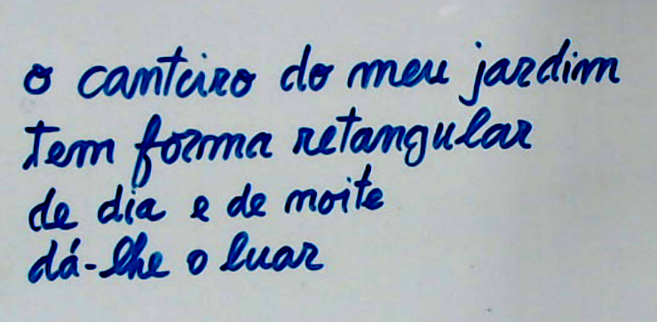

A Luísa formou-se em Filosofia em 1985, e sempre teve a paixão das bibliotecas, arquivos e áreas afins. Também é apaixonada pelo ensino.
Em 1989 a Luísa estava a frequentar uns cursos de formação em informática documental e a fazer um estágio em análise documental. Concorreu então aos mini-concursos para dar aulas no Ensino Recorrente (extensão educativa) noturno.
Obteve um horário incompleto correspondente ao ciclo preparatório. Os alunos estavam inscritos no 2º ciclo, muitos deles com o objectivo de conseguirem um diploma de 6º ano de escolaridade, requisito necessário para poderem concorrer a emprego na função pública.
As aulas estavam divididas em três áreas (cada uma lecionada por um professor diferente):
A Luísa estava encarregada da área 1,
As aulas decorriam na escola de Chemedião -- na freguesia da Ribeira, Terras de Bouro, fazendo parte do grupo de escolas da C+S de Terras de Bouro.
Chemedião é já em zona montanhosa, na fronteira do Parque Peneda-Gerês.
O acesso a Chemedião era complicado. Para além de distante de Braga (30 km), a estrada era usada pelos enormes camiões que transportam as Águas do Fastio (quase impossíveis de ultrapassar nessa estrada cheia de curvas). Principalmente na sua parte final, a estrada era estreita, com ravinas e muito inclinada. Muitas das viagens foram de noite.
O conjunto de alunos era bastante heterogéneo tando em idade como em personalidades e background.
No primeiro dia de aulas, a Luísa pediu-lhes que preenchessem uma folha com alguns dados pessoais. Ao chegar a casa, quando juntou tudo, constatou que tinham todos o mesmo número de telefone de contacto.
Pensou que havia engano. No dia seguinte explicaram-lhe que era o telefone da Venda, e que a senhora da venda mandava chamar a pessoa quando era preciso. Parece que era o único telefone...
Também havia poucas televisões, o que complicava a tarefa de arranjar exemplos comuns que todos conhecessem.
A senhora Ana (FIXME?) era a aluna mais idosa e mãe de 5 filhos um dos quais também aluno.
Um dos alunos com uns 20 anos, e talvez dos mais talentosos, interrompeu o ano para emigrar para frança. A Luísa ainda ajudou a escrever umas cartas burocráticas...
{width=12em}
Uma vez a minha filha (teria uns 7 anos) apareceu em casa com um papel minúsculo e olhava com grande cuidado para ele.
-- O que tens aí?
-- É uma poesia.
-- ?
-- A professora Rosalina(pessoa) escreveu no quadro um problema:
"O canteiro do meu jardim, tem forma retangular. ..."
e eu achei que parecia uma poesia.
E efectivamente escreveu no papelito:
"O canteiro do meu jardim
tem forma retangular
de dia e de noite
dá-lhe o luar."
-- E a professora?
-- Disse que é importante saber encontrar a poesia.
Parece-me que, ao contrário da versão oficial, aprendemos muito mais com os nossos filhos do que o inverso. Mesmo quando eles são pequenos.
Já me esqueci de toneladas de coisas, mas quando menos espero vem-me à lembrança a importância de procurar poesia escondida. E às vezes outras coisas escondidas.